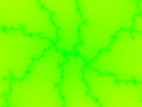
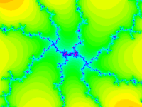

|
Mandelbrot Viewer
|
How to Use the Program
You can use the program without knowing anything about the mathematics of the Mandelbrot set. Drag your mouse (or your finger if using a touch screen) on the image, which draws a rectangular box around part of the image. When you release the mouse button, the part of the image inside the box will be expanded to fill the entire image. Look for interesting things along the boundary of the black region, or along the filaments that extend from that region.
About MaxIterations: The program has to do some computation to decide whether a point is colored or is black. The "MaxIterations" setting tells how much work it will do before giving up and making the point black. As you zoom in, you might need to increase MaxIterations to color in some black regions that really should be colored. For example, the image on the left below has black pixels that should be colored. Increasing MaxIterations from 250 to 2500 produced the image on the right:


About the palette: The colors in the images are arbitrary. The set of colors that are used is called the "palette" in the program. If you find that the colors in the image are too uniform, you can try decreasing the value in the PaletteLength menu. For example, changing the setting in that menu from 250 to 50 transformed the picture on the left to the picture on the right:
 
Conversely, if there are too many colors, try increasing the PaletteLength. Here, I increased it from 100 to 1000.


If you change the PaletteOffset setting, the same set of colors will be used, but they will be applied to the image differently. Using a different PaletteOffset can sometimes bring out details—and sometimes produces a more attractive image.
Several different sets of colors are available using the "Apply Standard Palette" button. Select a palette in the menu below the button, then click the button to apply the selected palette to the image. The default palette, which the program uses when it starts up, is called "Spectrum." (It can be quite fun to set the popup menu to "Random" and just keep hitting the "Apply Standard Palette" button. The "Random" setting produces a different palette each time it is clicked.)
About the Palette Editor: (New in August 2019.) The button labeled "Show Palette Editor" will pop up a dialog box that gives you almost total control over the palette of colors that are used in the image. Hover your mouse over an item in the palette editor to get information about it. For a more complete guide to the palette editor, see this map of the palette editor.
{kind=link}
About Workers: The Mandelbrot Viewer is a computation-intensive program. Most computers today are "multi-core", which means that they can do several computations simultaneously. To do that on a web page, the page can use several "worker threads." By default, the Mandelbrot program uses only one worker thread. You can make it use more by changing the setting of the "Workers" menu. For example, if your computer is "quad-core", then setting the "Workers" menu to 4 might make the program run four times as fast (assuming that your computer is not doing any other intensive work and that the web browser actually lets a page use all four cores).
More About Zooming and High Precision: I've already said that you can drag a box on the image to zoom in. There are also buttons for zooming in and zooming out. And if you are using a mouse, you have more flexible options for zooming. Hold down the shift key as you make the box to zoom out instead of zooming in (the current image will be shrunk down to the inside of the box). Double-click on the image to zoom in by a factor of two. The point where you double-click will be moved to the center of the image; if you want to leave that point in the same place, hold down the ALT/Option key as you double-click. You can also shift-double-click to zoom out.
If you zoom in far enough, the program will switch to "high precision" computations. Ordinary numbers on a computer have a limited number of decimal places. As you zoom in, those numbers will eventually not have enough accuracy to do the required computation. The high-precision mode can handle any number of decimal places—but it is much, much slower than computing with the usual numbers. If you want to continue in high precision mode, I suggest using a very small image, at least until you find something interesting enough to make it worth the wait for a larger image. Note that as long as "Interlaced Drawing" is turned on, the image starts to become recognizable after 15 or 20% of the lines in the image have been computed.
Saving your Work: Some browsers (Chrome and Firefox) make it possible to save the image from the program. Just right-click the image and choose "Save Image" or "View Image." ("View Image" will open the image in a new page, and you can save it from there.)
It is also possible to save all the settings that produced the image, and you can load the saved settings back into the program to recover the image. Unfortunately, the method for doing that is kind of clunky... Click the "Show XML Import/Export" button. This will show a text input box and some buttons that you can use to view, load, and save settings. Click the "Grab Current Example" button to get the settings for the current image. They're in a format called "XML". You don't need to understand the format, but you will be able to tell what most of the data means. You can copy-and-paste the settings from the text-input box into a text editor program, where you can save them in a file.
To load some saved settings back into the program, click the "Show XML Import/Export" button. Open the file where the settings are saved. Copy-and-paste the settings from the file into the text-input box in the Mandelbrot program. And click the "Apply" button to generate the image. (Note that the settings can include an image size, but that size is ignored when the settings are loaded.)
About the Java Version
This "web app" version of the Mandelbrot Viewer is a replacement for an older Java applet. The Java version has more features than the web app (notably, more control over the palette and the ability to distribute long computations among several computers on a network). But applets are no longer well-supported in web browsers. The standalone Java program is still available. Click here for information and downloading links.
Note that the web app version and the Java version of the program use the same settings files. You can save settings from one version and use them in the other.
Some Mathematical Details
The Mandelbrot set is a set of (x,y) points in the plane. It lies entirely inside the circle centered at (0,0) with radius 2. To find out whether the point (a,b) is in the Mandelbrot set, do the following computation: Let x = a and let y = b. Then do the following step over and over: Replace (x,y) with (x2−y2−a, 2xy−b). The number of times that you repeat this step is the number of "iterations." As you continue doing this step, if you get a value for (x,y) that is outside the circle centered at (0,0) with radius 2, then you know that the initial point (a,b) is NOT in the Mandelbrot set. The Mandelbrot set is defined as the set of points (a,b) for which the iteration never leaves that circle.
Note that this computation can never prove that a point (a,b) is in the Mandelbrot set, since that would require an infinite amount of computation. In practice, we have to stop the computation at some point, after doing a certain number of steps. (The number of steps after which the computation is stopped is what is called "MaxIterations" in the program.)
To get a visualization of the Mandelbrot set, do the iteration for one point in each pixel in the image. If the iteration reaches the maximum number of steps, color that pixel black. (Remember that this only means that the point might be in the Mandelbrot set.) Otherwise, the pixel is assigned a color that depends on the number of iterations that were done before (x,y) left the circle of radius 2. That number can be thought of as a sort of measure of how far the point is from being in the Mandelbrot set—the more iterations, the closer the point is to the set. In the program, the number of iterations is used to select a color from the palette.
After computing the image as described here, the program will make a second pass in which it computes iteration counts at additional points. The data from these additional points is averaged in with the data from the first pass. This can give a smoother, more attractive image. You can turn off this feature by unchecking the box labeled "Use Second Pass."
Some Loadable Examples
Here are 15 images from the program. Click on one of the images to open the program's web page and load that example. The program will render a larger-size version of the image. You can then use the program to do some further exploration. For example, click the "Zoom Out" button several times to see the neighborhood of the example in the full Mandelbrot set. You will usually see several striking images along the way! (There is also a large, unorganized collection of examples that you can load into the program.)
 |
 |
 |
 |
 |
 |
 |
 |
 |
 |
 |
 |
 |
 |
 |